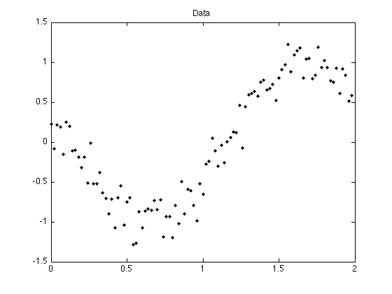
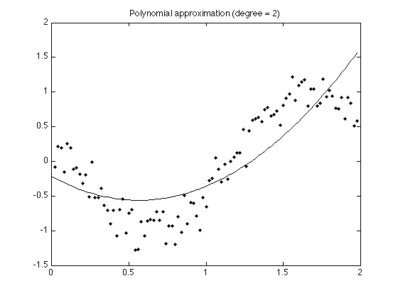
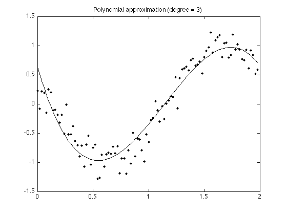
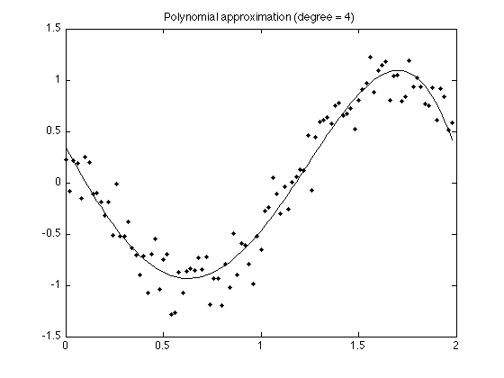

Least square polynomial approximation
This example illustrates the fitting of a low-order polynomial to data by least squares.
Ivan Selesnick selesi@poly.edu
Contents
Start
clear
close all
Load data
load data.txt; whos t = data(:, 1); % time index y = data(:, 2); % data value
Name Size Bytes Class Attributes data 100x2 1600 double
Display data
figure(1) clf plot(t, y, '.') title('Data')
Polynomial approximation (degree = 2)
A is a matrix of size 100 rows, 3 columns
A = bsxfun(@power, t, [2 1 0]); % Raise t to powers 2, 1, 0
size(A)
ans = 100 3
A'*A is a matrix of size 3 by 3
A'*A
ans = 312.0533 196.0200 131.3400 196.0200 131.3400 99.0000 131.3400 99.0000 100.0000
Solve the system A'*A*p = A'*y for p using the backslash. p is a vector of length 3.
p = (A'*A) \ (A'*y)
p =
1.0620
-1.1989
-0.2236
Display polynomial approximation
plot(t, polyval(p, t), t, y, '.') title('Polynomial approximation (degree = 2)')
Polynomial approximation (degree = 3)
A = bsxfun(@power, t, [3 2 1 0]); p = (A'*A) \ (A'*y); plot(t, polyval(p, t), t, y, '.') title('Polynomial approximation (degree = 3)')
Polynomial approximation (degree = 4)
A = bsxfun(@power, t, [4 3 2 1 0]); p = (A'*A) \ (A'*y); plot(t, polyval(p, t), t, y, '.') title('Polynomial approximation (degree = 4)')